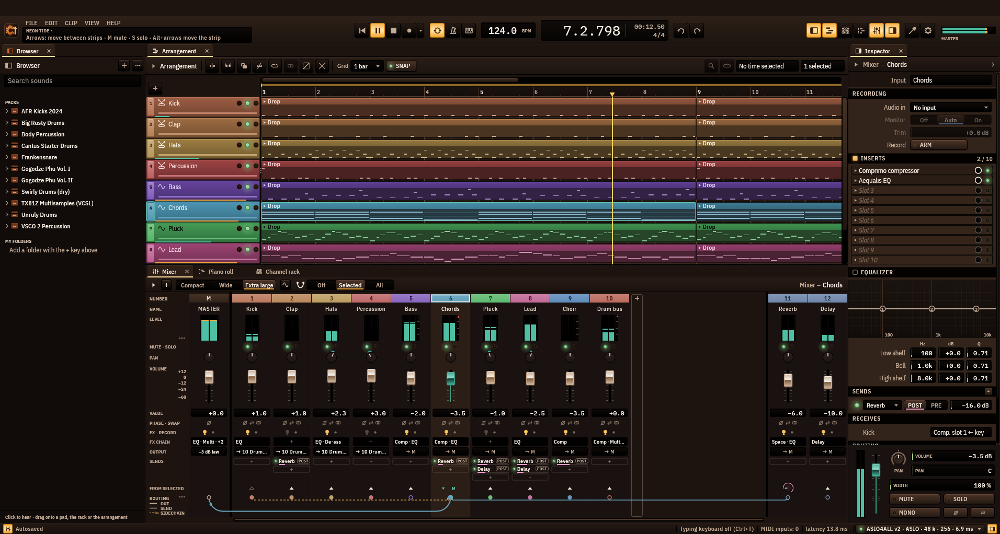

A complete DAW — arrange, record, mix and master — with nine instruments and twenty-five effects of its own. No account, no subscription, no telemetry.

to a ready window — 2.4× sooner than REAPER
sooner than FL Studio on a comparable starter
of a core at rest — REAPER 2.3–3.7 %, FL 6.6 %
memory on an empty song — REAPER 62 MB
Same laptop, same evening, same script, five starts each (2026-11-09).
See how it was measured →